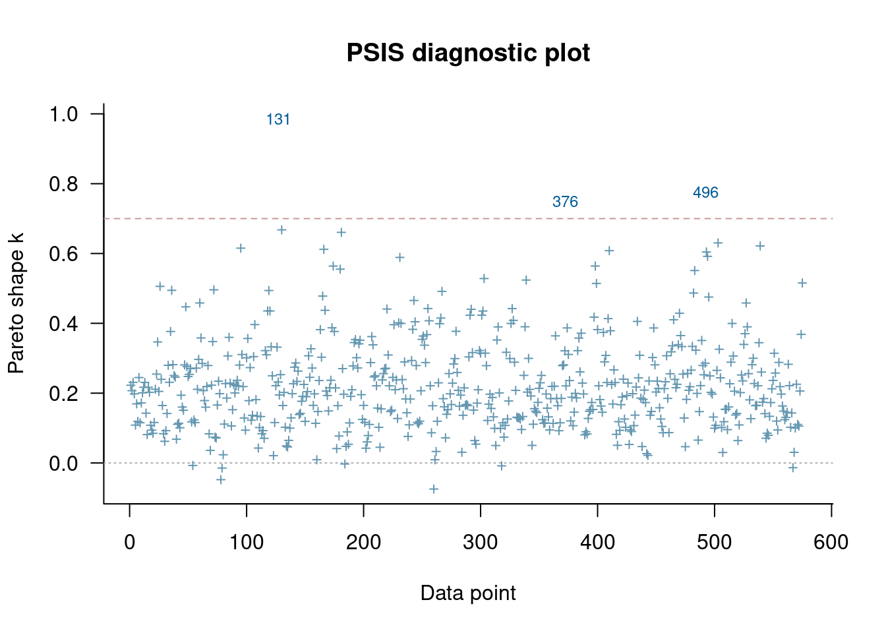

CV-FAQ includes a lot of informative answers to frequent questions and misconceptions.
Grading instructions:
The grading will be done in peergrade. All grading questions and evaluations for this assignment are contained within this document in the collapsible Rubric blocks.
Installing and using CmdStanR:
See the Stan demos on how to use Stan in R (or Python). Aalto JupyterHub has working R and CmdStanR/RStan environment and is probably the easiest way to use Stan. * To use CmdStanR in Aalto JupyterHub: library(cmdstanr) set_cmdstan_path('/coursedata/cmdstan')
The Aalto Ubuntu desktops also have the necessary libraries installed.
To install Stan on your laptop, run ‘install.packages("cmdstanr", repos = c("https://mc-stan.org/r-packages/", getOption("repos")))’ in R. If you encounter problems, see additional answers in FAQ. For Aalto students, if you don’t succeed in short amount of time, it is probably easier to use Aalto JupyterHub.
If you use Aalto JupyterHub, all necessary packages have been pre-installed. In your laptop, install package cmdstanr. Installation instructions on Linux, Mac and Windows can be found at https://mc-stan.org/cmdstanr/. Additional useful packages are loo, bayesplot and posterior (but you don’t need these in this assignment). For Python users, PyStan, CmdStanPy, and ArviZ packages are useful.
If you edit files ending .stan in RStudio, you can click “Check” in the editor toolbar to make syntax check. This can significantly speed-up writing a working Stan model.
Reporting accuracy
For posterior statistics of interest, only report digits that are not completely random based on the Monte Carlo standard error (MCSE).
Example: If you estimate \(E(\mu) \approx 1.234\) with MCSE(\(E(\mu)\)) = 0.01, then the true expectation is likely to be between \(1.204\) and \(1.264\), it makes sense to report \(E(\mu) \approx 1.2\).
If you want to install R and RStudio locally, download R and RStudio.
There are tons of tutorials, videos and introductions to R and RStudio online. You can find some initial hints from RStudio Education pages.
When working with R, we recommend writing the report using quarto and the provided template. The template includes the formatting instructions and how to include code and figures.
Instead of quarto, you can use other software to make the PDF report, but the the same instructions for formatting should be used.
Report all results in a single, anonymous *.pdf -file and submit it in peergrade.io.
The course has its own R package aaltobda with data and functionality to simplify coding. The package is pre-installed in JupyterHub. To install the package on your own system, run the following code (upgrade="never" skips question about updating other packages):
Many of the exercises can be checked automatically using the R package markmyassignment (pre-installed in JupyterHub). Information on how to install and use the package can be found in the markmyassignment documentation. There is no need to include markmyassignment results in the report.
Recommended additional self study exercises for each chapter in BDA3 are listed in the course web page. These will help to gain deeper understanding of the topic.
Deadlines for all assignments can be found on the course web page and in Peergrade. You can set email alerts for the deadlines in Peergrade settings.
You are allowed to discuss assignments with your friends, but it is not allowed to copy solutions directly from other students or from internet.
You can copy, e.g., plotting code from the course demos, but really try to solve the actual assignment problems with your own code and explanations.
Do not share your answers publicly.
Do not copy answers from the internet or from previous years. We compare the answers to the answers from previous years and to the answers from other students this year.
Do not submit empty PDFs, almost empty PDFs, copy of the questions, nonsense generated by yourself or AI, as these are just harming the other students as they can’t do peergrading for the empty or nonsense submissions. Violations of this rule will be reported and investigated in the same way was plagiarism.
If you have any suggestions or improvements to the course material, please post in the course chat feedback channel, create an issue, or submit a pull request to the public repository!
Rubric
Can you open the PDF and it’s not blank nor nonsense? If the pdf is blank, nonsense, or something like only a copy of the questions, 1) report it as problematic in Peergrade-interface to get another report to review, and 2) send a message to TAs.
Is the report anonymous?
This is the template for assignment 8. You can download the qmd-file or copy the code from this rendered document after clicking on </> Code in the top right corner.
Please replace the instructions in this template by your own text, explaining what you are doing in each exercise.
Setup
The following loads several needed packages:
library(bayesplot)
This is bayesplot version 1.11.1.9000
- Online documentation and vignettes at mc-stan.org/bayesplot
- bayesplot theme set to bayesplot::theme_default()
* Does _not_ affect other ggplot2 plots
* See ?bayesplot_theme_set for details on theme setting
library(cmdstanr)
This is cmdstanr version 0.8.1.9000
- CmdStanR documentation and vignettes: mc-stan.org/cmdstanr
The following objects are masked from 'package:stats':
filter, lag
The following objects are masked from 'package:base':
intersect, setdiff, setequal, union
library(ggplot2)library(ggdist) # for stat_dotsintervallibrary(posterior)
This is posterior version 1.6.0
Attaching package: 'posterior'
The following object is masked from 'package:bayesplot':
rhat
The following objects are masked from 'package:stats':
mad, sd, var
The following objects are masked from 'package:base':
%in%, match
library(brms)
Loading required package: Rcpp
Loading 'brms' package (version 2.21.6). Useful instructions
can be found by typing help('brms'). A more detailed introduction
to the package is available through vignette('brms_overview').
Attaching package: 'brms'
The following objects are masked from 'package:ggdist':
dstudent_t, pstudent_t, qstudent_t, rstudent_t
The following object is masked from 'package:bayesplot':
rhat
The following object is masked from 'package:stats':
ar
# Globally specfiy cmdstan backend for brmsoptions(brms.backend="cmdstanr")# Tell brms to cache results if possibleoptions(brms.file_refit="on_change")# Set more readable themes with bigger font for plotting packagesggplot2::theme_set(theme_minimal(base_size =14))bayesplot::bayesplot_theme_set(theme_minimal(base_size =14))
2 A hierarchical model for chicken weight time series
2.1 Exploratory data analysis
In the first part of this assignment, you will explore the dataset ChickWeight. In particular, you will see what information is recorded in the dataset, and how you can use visualisation to learn more about the dataset. More information can be found on the corresponding page of the R documentation.
In this section, you will build a model that predicts the weight of a chicken over time and depending on the diet. After sampling from the posteriors, you will use posterior predictive checks to see how well the predictions match the observations. Then you will adjust the model by adding more complexity, and check again.
Subtask 2.c
Using brms, implement a pooled linear regression with a normal model and weight as the predicted variable using Diet and Time as predictors. Try to use weakly informative priors.
Tip
For the prior on Time, consider how much the weight of a chicken (in grams) could possibly change each day. For the priors on the effects of different diets, consider how much average weight difference would be possible between diets.
Note that as Diet is a categorical variable, the priors need to be specified for each category (apart from Diet1 which is taken to be the baseline).
In brms, a regression can be specified as below, see also below (#m) or the last template. Fill in the appropriate variables, data, and likelihood family. Specify the priors, then run the model (by removing #| eval: false below).
priors <-c(prior(normal(0, <value>), coef ="Time"),prior(normal(0, <value>), coef ="Diet2"),prior(normal(0, <value>), coef ="Diet3"),prior(normal(0, <value>), coef ="Diet4"))f1 <- brms::brm(# This specifies the formula<OUTCOME>~1+<PREDICTOR>+<PREDICTOR>,# This specifies the datasetdata =<data>,# This specifies the observation model familyfamily =<observation_family>,# This passes the priors specified above to brmsprior = priors,# This causes brms to cache the resultsfile ="additional_files/assignment8/f1")### {.content-hidden when-profile="public"}priors <-c(prior(normal(0, 10), coef ="Time"),prior(normal(0, 50), coef ="Diet2"),prior(normal(0, 50), coef ="Diet3"),prior(normal(0, 50), coef ="Diet4"))f1 <- brms::brm( weight ~1+ Diet + Time,data = ChickWeight,family ="gaussian",prior = priors)###
Rubric
Is the brms-formula ?
Is the family ?
Are the prior standard deviations reasonable, e.g. around ?
Next, you can use the bayesplot package to check the posterior predictions in relation to the observed data using the pp_check function. The function plots the \(y\) values, which are the observed data, and the \(y_\text{rep}\) values, which are replicated data sets from the posterior predictive distribution.
Subtask 2.d
Perform the posterior predictive check with the default arguments. What do you observe? Based on the plot, do the posterior predictions encapsulate the main features of the observed data? Point out any major differences between the predictions and the observed data. Answer the following questions:
Are there qualitative differences between the observed data and the predicted data?
Error in eval(expr, envir, enclos): object 'f1' not found
###
Rubric
Does the plot look correct and is it readable?
Has it been recognized that the predicted data include ?
Has it been recognized that the observed and predicted data ?
The default density plot is not always informative, but bayesplot has different settings that can be used to create plots more appropriate for specific data.
Subtask 2.e
Create another plot with grouping to the PPC plot using the arguments type = "intervals_grouped" and group = "Diet". What do you observe? Point out any major differences between the predictions and the observed data. Based on your visualisations, how could the model be improved?
# Useful functions: brms::pp_check(..., type = ..., group=...)### {.content-hidden when-profile="public"}brms::pp_check(..., type ="intervals_grouped", group="Diet")
Error in eval(expr, envir, enclos): '...' used in an incorrect context
###
Rubric
Does the plot look correct and is it readable?
Is there at least one reasonable way to improve the model, e.g. ?
2.3 Log-normal linear regression
Based on the identified issues from the posterior predictive check, the model can be improved. It is advisable to change only one or a few things about a model at once. At this stage, focus on changing the observation model family to better account for the observed data.
One option is to use the lognormal observation model, which only allows positive values. In brms you can change the observation model family to this by setting the argument family = "lognormal". Note that when using the log-normal observation model, the regression coefficients represent the change in the log weight of a chicken. The priors have been adjusted accordingly in the template.
Subtask 2.f
Adjust the model, sample from the posterior and create the same two posterior predictive check plots. Comment on your observations. Does the new model better capture some aspects of the data?
Error in eval(expr, envir, enclos): object 'priors' not found
# criticism with ppc density (not grouped)brms::pp_check(f2)
Error in eval(expr, envir, enclos): object 'f2' not found
# information for each chickenbrms::pp_check(f2, type ="intervals_grouped", group ="Diet")
Error in eval(expr, envir, enclos): object 'f2' not found
###
Rubric
Do the plots look correct and are they readable?
Has it been recognized that the fit to data is ?
2.4 Hierarchical log-normal linear regression
The model can further be improved by directly considering potential differences in growth rate for individual chicken. Some chickens may innately grow faster than others, and this difference can be included by including both population and group level effects in to the model.
To include a group effect in brms, the code + (predictor|group) can be added to the model formula. In this case, the predictor is Time and the group is Chick.
Subtask 2.g
Create the same two plots as for the previous models. Comment on what you see. Do the predictions seem to better capture the observed data? Are there remaining discrepancies between the predictions and observed data that could be addressed?
For execution on a local, multicore CPU with excess RAM we recommend calling
options(mc.cores = parallel::detectCores()).
To avoid recompilation of unchanged Stan programs, we recommend calling
rstan_options(auto_write = TRUE)
For within-chain threading using `reduce_sum()` or `map_rect()` Stan functions,
change `threads_per_chain` option:
rstan_options(threads_per_chain = 1)
Attaching package: 'rstan'
The following objects are masked from 'package:posterior':
ess_bulk, ess_tail
2.4.2
Rubric
Do the plots look correct and are they readable?
Has it been recognized that the fit to data is ?
Subtask 2.h
Have you encountered any convergence issues in the above models? Report and comment.
Rubric
Has there been a potentially brief discussion of the standard convergence criteria (Rhat, ESS, divergent transitions) for all models?
2.5 Model comparison using the ELPD
There are many ways of comparing models1. Commonly, we evaluate point predictions, such as the mean of the predictive distribution2, or accuracy of the whole posterior predictive. Whether we prioritise point or density predictive accuracy may serve different purposes and lead to different outcomes for model choice 3. It is common, however, to report predictive accuracy via log-scores and point-predictive accuracy via root-mean-squared-error based on the empirical average of the predictive distribution. To cross-validate both metrics on left out observations without need to sample from each leave-one-out posterior, we use Pareto-smoothed importance sampling as discussed in the course materials (see Lecture 8).
We start comparing models based on the log-score. Use loo::loo() and loo::loo_compare() to quantify the differences in predictive performance.
Subtask 2.i
Answer the following questions using loo/loo_compare:
Which model has the best predictive performance?
Does the uncertainty influence the decision of which model is best?
Error in h(simpleError(msg, call)): error in evaluating the argument 'x' in selecting a method for function 'loo': object 'f1' not found
loo_f1
Error in eval(expr, envir, enclos): object 'loo_f1' not found
loo_f2 <-loo(f2)
Error in h(simpleError(msg, call)): error in evaluating the argument 'x' in selecting a method for function 'loo': object 'f2' not found
loo_f2
Error in eval(expr, envir, enclos): object 'loo_f2' not found
loo_f3 <-loo(f3)
Warning: Found 3 observations with a pareto_k > 0.7 in model 'f3'. We recommend
to set 'moment_match = TRUE' in order to perform moment matching for
problematic observations.
loo_f3
Computed from 4000 by 578 log-likelihood matrix.
Estimate SE
elpd_loo -2254.7 27.1
p_loo 78.8 6.7
looic 4509.5 54.2
------
MCSE of elpd_loo is NA.
MCSE and ESS estimates assume MCMC draws (r_eff in [0.2, 1.6]).
Pareto k diagnostic values:
Count Pct. Min. ESS
(-Inf, 0.7] (good) 575 99.5% 217
(0.7, 1] (bad) 3 0.5% <NA>
(1, Inf) (very bad) 0 0.0% <NA>
See help('pareto-k-diagnostic') for details.
loo_compare(loo_f1, loo_f2, loo_f3)
Error in eval(expr, envir, enclos): object 'loo_f1' not found
###
Rubric
Do the results look correct and have they been presented in a readable way? They should be roughly .
Has it been recognized that the best model is and that the uncertainty is ?
Subtask 2.j
Assess whether the approximation to the LOO-CV distributions are reliable. Consult the \(\hat{k}\) statistic which informs on the reliability of PSIS computation in PSIS-LOO. Plot the \(\hat{k}\) values for each model against the data point ID and discuss. Are they as expected?
Tip
For hierarchical models, it may be more important to think about how well the individual group is predicted and how many observations there are in a group compared to the number of parameters estimated. Also check out CV-FAQ on high Pareto-\(\hat{k}\) values.
Error in h(simpleError(msg, call)): error in evaluating the argument 'x' in selecting a method for function 'plot': error in evaluating the argument 'x' in selecting a method for function 'loo': object 'f1' not found
plot(loo(f2), label_points =TRUE)
Error in h(simpleError(msg, call)): error in evaluating the argument 'x' in selecting a method for function 'plot': error in evaluating the argument 'x' in selecting a method for function 'loo': object 'f2' not found
plot(loo(f3), label_points =TRUE)
Warning: Found 3 observations with a pareto_k > 0.7 in model 'f3'. We recommend
to set 'moment_match = TRUE' in order to perform moment matching for
problematic observations.

###
Rubric
Do the plots look correct and are they readable?
Has it been explained why the \(\hat{k}\) values are highest for the ? .
Subtask 2.k
Perform a PPC for the hierarchical model for
a few of the chickens with the highest \(\hat{k}\) values and
a few of the chickens with the lowest \(\hat{k}\) values
using the code in the template. What do you observe?
Creating a dummy example plot
Creating a dummy fit just to be able to generate an example plot below. Generate a similar plot for your hierarchical model.
# The brms-formula (weights ~ ...) below is not one that you should be using in your models!dummy_fit <- brms::brm( weight ~1+ Time + Chick,data = ChickWeight,file="additional_files/assignment8/dummy_fit")# Adjust the chicken_idxs variable to select appropriate chickenschicken_idxs =c(1,3,11,43)# Create this plot for your hierarchical model for selected chickensbrms::pp_check( dummy_fit, type ="intervals_grouped", group ="Chick",newdata=ChickWeight |>filter(Chick %in% chicken_idxs))
Rubric
Does the plot look correct and is it readable?
Has it been recognized that the chickens with high \(\hat{k}\) values ?
2.6 Model comparison using the RMSE
Subtask 2.l
Use the function in the template to compare the RMSE and the LOO-RMSE for the three models. Explain the difference between the RMSE and the LOO-RMSE in 1–3 sentences. Is one generally lower than the other? Why?
rmse function implementation
The below function takes a brms fit object and computes either the root-mean-square error (RMSE) or the PSIS-LOO-RMSE, i.e. the RMSE using LOO-CV estimated using PSIS-LOO.
Do the results look correct and have they been presented in a readable way? They should be roughly: .
Has it been recognized that the RMSE is than the LOO-RMSE because ?
3 Overall quality of the report
Rubric
Does the report include comment on whether AI was used, and if AI was used, explanation on how it was used?
No
Yes
Does the report follow the formatting instructions?
Not at all
Little
Mostly
Yes
In case the report doesn’t fully follow the general and formatting instructions, specify the instructions that have not been followed. If applicable, specify the page of the report, where this difference is visible. This will help the other student to improve their reports so that they are easier to read and review. If applicable, specify the page of the report, where this difference in formatting is visible.
Please also provide feedback on the presentation (e.g. text, layout, flow of the responses, figures, figure captions). Part of the course is practicing making data analysis reports. By providing feedback on the report presentation, other students can learn what they can improve or what they already did well. You should be able to provide constructive or positive feedback for all non-empty and non-nonsense reports. If you think the report is perfect, and you can’t come up with any suggestions how to improve, you can provide feedback on what you liked and why you think some part of the report is better than yours.
Footnotes
In principle, when comparing models based on accuracy in predictions or parameter estimation (if true parameter values are available to you, as e.g. in simulation studies), we want to use so called strictly proper scoring rules that will always indicate when a “better” model is better and the score reaches its uniquely defined best value at the “true” model, if it is also well defined. See Gneiting and Raftery, (2007) for an in depth treatment of this topic.↩︎
NOT predictions based on the mean of the posterior parameters, but first generating the predictive distribution and then computing an average.↩︎
For instance, a unimodal and bimodal predictive density may have the same expected value, but very different areas of high posterior density and therefore very different log-scores.↩︎
Source Code
---title: "Assignment 8, 2023"subtitle: "LOO-CV model comparison"author: "Aki Vehtari et al."format: html: toc: true code-tools: true code-line-numbers: true number-sections: true mainfont: Georgia, serif page-layout: article pdf: geometry: - left=1cm,top=1cm,bottom=1cm,right=7cm number-sections: true code-annotations: noneeditor: sourceassignments: ta---# General information**This is for BDA 2023****The maximum amount of points from this assignment is 6.**We have prepared a **quarto template specific to this assignment ([html](template8.html), [qmd](https://avehtari.github.io/BDA_course_Aalto/assignments/template8.qmd), [pdf](template8.pdf))** to help you get started.:::{.callout-warning icon=false title="Setup" collapse=true}We recommend Aalto students use [jupyter.cs.aalto.fi](https://jupyter.cs.aalto.fi), for all others we also provide a [docker container](docker.html).::::::{.callout-tip collapse=false}**Reading instructions**:- [**The reading instructions for BDA3 Chapter 6**](../BDA3_notes.html#ch6) (posterior predictive checking).- [**The reading instructions for BDA3 Chapter 7**](../BDA3_notes.html#ch7) (predictive performance).- The [‘loo‘ package vignette on the basics of LOO](https://mc-stan.org/loo/articles/loo2-with-rstan.html)shows an example of how to modify Stan code and use the package with Stan models.- Also readabout PSIS-LOO in the [PSIS-LOO paper](https://link.springer.com/article/10.1007/s11222-016-9696-4).- [CV-FAQ](https://avehtari.github.io/modelselection/CV-FAQ.html) includes a lot of informative answers to frequent questions and misconceptions.{{< include includes/_grading_instructions.md >}}{{< include includes/_cmdstanr.md >}}:::{{< include includes/_reporting_accuracy.md >}}{{< include includes/_general_info.md >}}::: {.content-visible when-profile="public"}This is the template for [assignment 8](assignment8.html). You can download the [qmd-file](https://avehtari.github.io/BDA_course_Aalto/assignments/template8.qmd) or copy the code from this rendered document after clicking on `</> Code` in the top right corner.**Please replace the instructions in this template by your own text, explaining what you are doing in each exercise.**:::::: {.callout-warning collapse=false}## SetupThe following loads several needed packages:```{r}#| label: importslibrary(bayesplot)library(cmdstanr)library(dplyr)library(ggplot2)library(ggdist) # for stat_dotsintervallibrary(posterior)library(brms)# Globally specfiy cmdstan backend for brmsoptions(brms.backend="cmdstanr")# Tell brms to cache results if possibleoptions(brms.file_refit="on_change")# Set more readable themes with bigger font for plotting packagesggplot2::theme_set(theme_minimal(base_size =14))bayesplot::bayesplot_theme_set(theme_minimal(base_size =14))```:::# A hierarchical model for chicken weight time series## Exploratory data analysisIn the first part of this assignment, you will explore the dataset `ChickWeight`. In particular, you will see what information is recorded in the dataset, and how you can use visualisation to learn more about the dataset. More information can be found on the corresponding page of the [R documentation](https://www.rdocumentation.org/packages/datasets/versions/3.6.2/topics/ChickWeight).```{r}head(ChickWeight, 10)```:::{.callout-warning icon=false title="Subtask 2.a)"}Create a histogram to explore the range of chicken weights.Describe what you see in the plot. What is the qualitative range of the data?::::::{.content-visible when-profile="public"}```{r}# Useful functions: ggplot, aes(x=...), geom_histogram### {.content-hidden when-profile="public"}ggplot(data = ChickWeight, aes(x=ChickWeight$weight)) +geom_histogram()###```::::::{.callout-note icon=false title="Rubric"}* Does the plot look correct and is it readable?* Has it been stated that the data takes on only values which are [positive]{.content-hidden when-profile="public"}?::::::{.callout-warning icon=false title="Subtask 2.b"}Plot the weight of each chicken over time in a line plot. Add colours based on the diet.Describe what you see in the plot.::::::{.content-visible when-profile="public"}```{r}# Useful functions: ggplot, aes(x=...,y=...,group=...,color=...), geom_line### {.content-hidden when-profile="public"}ggplot(data = ChickWeight, aes(x=Time, y=weight, group = Chick, color=Diet)) +geom_line()###```::::::{.callout-note icon=false title="Rubric"}* Does the plot look correct and is it readable?:::## Linear regressionIn this section, you will build a model that predicts the weight of achicken over time and depending on the diet. After sampling from the posteriors, youwill use posterior predictive checks to see how well the predictionsmatch the observations. Then you will adjust the model by adding morecomplexity, and check again.::: {.callout-warning icon=false title="Subtask 2.c"}Using `brms`, implement a pooled linear regression with a normalmodel and `weight` as the predictedvariable using `Diet` and `Time` as predictors. Try to use weakly informative priors.:::::: {.callout-tip collapse=false}For the prior on `Time`, consider how much the weight of a chicken (in grams) could possiblychange each day. For the priors on the effects of different diets,consider how much average weight difference would be possible betweendiets.Note that as `Diet` is a categorical variable, the priors need to bespecified for each category (apart from `Diet1` which is taken to bethe baseline).::::::{.content-visible when-profile="public"}In `brms`, a regression can be specified as below, see also [below (#m)](#m) or [the last template](template7.html#b-1). Fill in the appropriate variables,data, and likelihood family. Specify the priors, then run the model (by removing `#| eval: false` below).```{r}#| eval: falsepriors <-c(prior(normal(0, <value>), coef ="Time"),prior(normal(0, <value>), coef ="Diet2"),prior(normal(0, <value>), coef ="Diet3"),prior(normal(0, <value>), coef ="Diet4"))f1 <- brms::brm(# This specifies the formula<OUTCOME>~1+<PREDICTOR>+<PREDICTOR>,# This specifies the datasetdata =<data>,# This specifies the observation model familyfamily =<observation_family>,# This passes the priors specified above to brmsprior = priors,# This causes brms to cache the resultsfile ="additional_files/assignment8/f1")### {.content-hidden when-profile="public"}priors <-c(prior(normal(0, 10), coef ="Time"),prior(normal(0, 50), coef ="Diet2"),prior(normal(0, 50), coef ="Diet3"),prior(normal(0, 50), coef ="Diet4"))f1 <- brms::brm( weight ~1+ Diet + Time,data = ChickWeight,family ="gaussian",prior = priors)###```::::::{.callout-note icon=false title="Rubric"}* Is the brms-formula [`weight ~ 1 + Diet + Time`]{.content-hidden when-profile="public"}?* Is the family [`"gaussian"`]{.content-hidden when-profile="public"}?* Are the prior standard deviations reasonable, e.g. around [10 (Time) and 50 (DietX)]{.content-hidden when-profile="public"}?:::Next, you can use the `bayesplot` package to check the posteriorpredictions in relation to the observed data using the [`pp_check` function](https://mc-stan.org/bayesplot/reference/pp_check.html).The function plots the $y$ values, which are the observed data,and the $y_\text{rep}$ values, which are replicated data sets from theposterior predictive distribution.:::{.callout-warning icon=false title="Subtask 2.d"}Perform the posterior predictive check with the default arguments.What do you observe? Based on the plot, do the posterior predictionsencapsulate the main features of the observed data? Point out anymajor differences between the predictions and the observed data.Answer the following questions:* Are there qualitative differences between the observed data and the predicted data?* Do the observed data seem quantitatively similar?::::::{.content-visible when-profile="public"}```{r}# Useful functions: brms::pp_check### {.content-hidden when-profile="public"}brms::pp_check(f1, plotfun="hist")###```::::::{.callout-note icon=false title="Rubric"}* Does the plot look correct and is it readable?* Has it been recognized that the predicted data include [negative values while the observed data do not]{.content-hidden when-profile="public"}?* Has it been recognized that the observed and predicted data [do not agree very well]{.content-hidden when-profile="public"}?:::The default density plot is not always informative, but `bayesplot`has different settings that can be used to create plots moreappropriate for specific data.:::{.callout-warning icon=false title="Subtask 2.e"}Create another plot with grouping to the PPC plot using the arguments`type = "intervals_grouped"` and `group = "Diet"`.What do you observe? Point out any major differencesbetween the predictions and the observed data.Based on your visualisations, how could the model be improved?::::::{.content-visible when-profile="public"}```{r}# Useful functions: brms::pp_check(..., type = ..., group=...)### {.content-hidden when-profile="public"}brms::pp_check(..., type ="intervals_grouped", group="Diet")###```::::::{.callout-note icon=false title="Rubric"}* Does the plot look correct and is it readable?* Is there at least one reasonable way to improve the model, e.g. [enforcing positivity or taking into account heterogeneity]{.content-hidden when-profile="public"}?:::## Log-normal linear regressionBased on the identified issues from the posterior predictive check,the model can be improved. It is advisable to change only one or a fewthings about a model at once. At this stage, focus on changing theobservation model family to better account for the observed data.One option is to use the lognormal observation model, which only allowspositive values. In `brms` you can change the observation model familyto this by setting the argument `family = "lognormal"`.Note that when using the log-normal observation model, the regressioncoefficients represent the change in the log weight of a chicken. Thepriors have been adjusted accordingly in the template.::: {.callout-warning icon=false title="Subtask 2.f"}Adjust the model, sample from the posterior and create the same two posterior predictivecheck plots. Comment on your observations. Does the new model bettercapture some aspects of the data?:::::: {.callout-tip collapse=false}::::::{.content-visible when-profile="public"}```{r}log_priors <-c(prior(normal(0, log(3)), coef ="Time"),prior(normal(0, log(5)), coef ="Diet2"),prior(normal(0, log(5)), coef ="Diet3"),prior(normal(0, log(5)), coef ="Diet4"))### {.content-hidden when-profile="public"}f2 <-brm( weight ~ Diet + Time,data = ChickWeight,family ="lognormal",prior = priors)# criticism with ppc density (not grouped)brms::pp_check(f2)# information for each chickenbrms::pp_check(f2, type ="intervals_grouped", group ="Diet")###```::::::{.callout-note icon=false title="Rubric"}* Do the plots look correct and are they readable?* Has it been recognized that the fit to data is [better but not ideal because it does not model heterogeneity in the growth rate of individual chickens]{.content-hidden when-profile="public"}?:::## Hierarchical log-normal linear regressionThe model can further be improved by directly considering potentialdifferences in growth rate for individual chicken. Some chickens mayinnately grow faster than others, and this difference can be includedby including both population and group level effects in to the model.To include a group effect in `brms`, the code `+(predictor|group)` can be added to the model formula. In this case,the predictor is `Time` and the group is `Chick`.::: {.callout-warning icon=false title="Subtask 2.g"}Create the same two plots as for the previous models. Comment on whatyou see. Do the predictions seem to better capture the observed data?Are there remaining discrepancies between the predictions and observeddata that could be addressed?### {.content-hidden when-profile="public"}```{r}priors <-c(prior(normal(0, log(3)), coef ="Time"),prior(normal(0, log(5)), coef ="Diet2"),prior(normal(0, log(5)), coef ="Diet3"),prior(normal(0, log(5)), coef ="Diet4"))f3 <-brm( weight ~ Diet + Time + (Time|Chick),data = ChickWeight,family ="lognormal",prior = priors)```###::::::{.callout-note icon=false title="Rubric"}* Do the plots look correct and are they readable?* Has it been recognized that the fit to data is [the best so far, or have discrepancies been discussed]{.content-hidden when-profile="public"}?::::::{.callout-warning icon=false title="Subtask 2.h"}Have you encountered any convergence issues in the above models? Report and comment.::::::{.callout-note icon=false title="Rubric"}* Has there been a potentially brief discussion of the standard convergence criteria (Rhat, ESS, divergent transitions) for all models?:::## Model comparison using the ELPDThere are many ways of comparing models[^footnote1]. Commonly, we evaluate point predictions, such as the mean of the predictive distribution[^footnote2], or accuracy of the whole posterior predictive. Whether we prioritise point or density predictive accuracy may serve different purposes and lead to different outcomes for model choice [^footnote3]. It is common, however, to report predictive accuracy via log-scores and point-predictive accuracy via root-mean-squared-error based on the empirical average of the predictive distribution. To cross-validate both metrics on left out observations without need to sample from each leave-one-out posterior, we use Pareto-smoothed importance sampling as discussed in the course materials (see Lecture 8).We start comparing models based on the log-score. Use `loo::loo()` and `loo::loo_compare()` to quantify the differences in predictive performance.[^footnote1]: In principle, when comparing models based on accuracy in predictions or parameter estimation (if true parameter values are available to you, as e.g. in simulation studies), we want to use so called strictly proper scoring rules that will always indicate when a "better" model is better and the score reaches its uniquely defined best value at the "true" model, if it is also well defined. See [**Gneiting and Raftery, (2007)**](https://www.tandfonline.com/doi/abs/10.1198/016214506000001437) for an in depth treatment of this topic.[^footnote2]: NOT predictions based on the mean of the posterior parameters, but first generating the predictive distribution and then computing an average.[^footnote3]: For instance, a unimodal and bimodal predictive density may have the same expected value, but very different areas of high posterior density and therefore very different log-scores.:::{.callout-warning icon=false title="Subtask 2.i"}Answer the following questions using `loo`/`loo_compare`:* Which model has the best predictive performance?* Does the uncertainty influence the decision of which model is best?::::::{.content-visible when-profile="public"}```{r}# Useful functions: loo, loo_compare### {.content-hidden when-profile="public"}loo_f1 <-loo(f1)loo_f1loo_f2 <-loo(f2)loo_f2loo_f3 <-loo(f3)loo_f3loo_compare(loo_f1, loo_f2, loo_f3)###```::::::{.callout-note icon=false title="Rubric"}* Do the results look correct and have they been presented in a readable way? They should be roughly [ model: elpd_diff s e_diff hierarchical_model: 0.0 0.0 lognormal_model: -395.6 30.2 normal_model: -642.0 31.8]{.content-hidden when-profile="public"}.* Has it been recognized that the best model is [the hierarchical model]{.content-hidden when-profile="public"} and that the uncertainty is [low]{.content-hidden when-profile="public"}?::::::{.callout-warning icon=false title="Subtask 2.j"}Assess whether the approximation to the LOO-CV distributions are reliable.Consult the $\hat{k}$ statistic which informs on the reliability of PSIS computation in PSIS-LOO.Plot the $\hat{k}$ values for each model against the data point ID and discuss.Are they as expected?::::::{.callout-tip collapse=false}For hierarchical models, it may be more important to think about how well the individual group is predicted and how many observations there are in a group compared to the number of parameters estimated. Also check out [CV-FAQ on high Pareto-$\hat{k}$ values](https://avehtari.github.io/modelselection/CV-FAQ.html#17_What_to_do_if_I_have_high_Pareto_(hat{k})%E2%80%99s).::::::{.content-visible when-profile="public"}```{r}# Useful functions: plot(loo(...), label_points = TRUE)### {.content-hidden when-profile="public"}plot(loo(f1), label_points =TRUE)plot(loo(f2), label_points =TRUE)plot(loo(f3), label_points =TRUE)###```::::::{.callout-note icon=false title="Rubric"}* Do the plots look correct and are they readable?* Has it been explained why the $\hat{k}$ values are highest for the [hierarchical model]{.content-hidden when-profile="public"}? [Fewer observations affect each parameter, magnifying the effect of "outliers" on the posterior, resulting in more different posteriors, making IS more difficult]{.content-hidden when-profile="public"}.::::::{.callout-warning icon=false title="Subtask 2.k"}Perform a PPC for the hierarchical model for* a few of the chickens with the highest $\hat{k}$ values and* a few of the chickens with the lowest $\hat{k}$ valuesusing the code in the template. What do you observe?::::::{.callout-warning collapse=false}## Creating a dummy example plotCreating a dummy fit just to be able to generate an example plot below.Generate a similar plot for your hierarchical model.```{r}#| output: false# The brms-formula (weights ~ ...) below is not one that you should be using in your models!dummy_fit <- brms::brm( weight ~1+ Time + Chick,data = ChickWeight,file="additional_files/assignment8/dummy_fit")# Adjust the chicken_idxs variable to select appropriate chickenschicken_idxs =c(1,3,11,43)# Create this plot for your hierarchical model for selected chickensbrms::pp_check( dummy_fit, type ="intervals_grouped", group ="Chick",newdata=ChickWeight |>filter(Chick %in% chicken_idxs))```::::::{.callout-note icon=false title="Rubric"}* Does the plot look correct and is it readable?* Has it been recognized that the chickens with high $\hat{k}$ values [have predictions which don’t fit well to the data]{.content-hidden when-profile="public"}?:::## Model comparison using the RMSE:::{.callout-warning icon=false title="Subtask 2.l"}Use the function in the template to compare the RMSE and the LOO-RMSE for the three models.Explain the difference between the RMSE and the LOO-RMSE in 1--3 sentences. Is one generally lower than the other? Why?::::::{.callout-warning collapse=false}## `rmse` function implementationThe below function takes a brms fit object and computes either the [root-mean-square error (RMSE)](https://en.wikipedia.org/wiki/Root-mean-square_deviation) or the PSIS-LOO-RMSE, i.e. the RMSE using LOO-CV estimated using PSIS-LOO.```{r}# Compute RMSE or LOO-RMSErmse <-function(fit, use_loo=FALSE){ mean_y_pred <-if(use_loo){ brms::loo_predict(fit) }else{colMeans(brms::posterior_predict(fit)) }sqrt(mean( (mean_y_pred - brms::get_y(fit))^2 ))}```::::::{.callout-note icon=false title="Rubric"}* Do the results look correct and have they been presented in a readable way? They should be roughly: [ model rmse loo_rmse 1 normal 35.88809 36.17574 2 log-normal 34.77978 35.06848 3 hierarchical 15.79850 19.85490]{.content-hidden when-profile="public"}.* Has it been recognized that the RMSE is [generally lower]{.content-hidden when-profile="public"} than the LOO-RMSE because [conditioning on the otherwise left out observation overestimates the predictive performance for held out data]{.content-hidden when-profile="public"}?:::{{< include includes/_overall_quality.md >}}